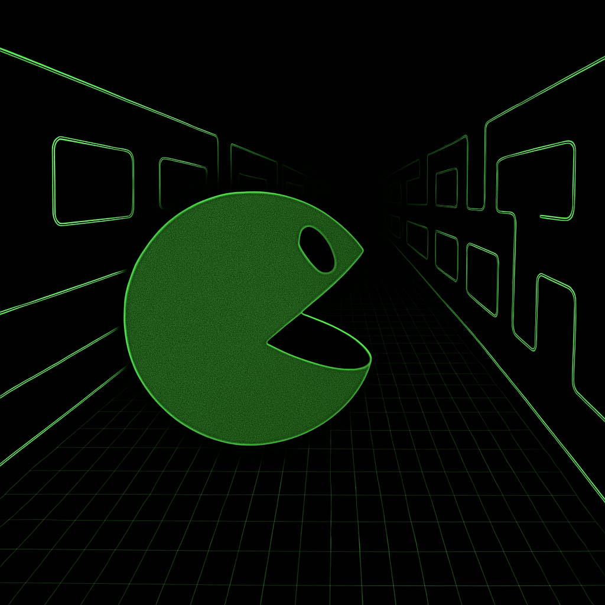

2025-03-30
Mine is not to debate with the artists, software craftsmen, or code poets. Mine is to get stuff done. Sure, I want elegant, maintainable, and efficient code, but I do not really care how I get there.
This is a guide for experienced developers who want to integrate LLMs into their workflow without delusions. Vibecoding is not about passively watching magic happen—it's about controlling the chaos, accelerating tedious work, and unlocking creative potential. It’s messy, tactical, and powerful—if you know how to wield it.
You cannot just ride the vibe. Even the LLM won't let you. You can try to get it to code your dreams and prompt, “I want a three-dimensional third-person version of Pac-Man that feels like you're in a horror movie.” It will even eagerly code the first step. You may even be impressed.

However, it ends there. You will, at best, have a basic Hello Unity app.
As eagerly as the LLM coded the first step, it will eagerly code the third or fourth. Like humans, it will get a lot wrong based on what you intended or agreed to. You have to correct it and be very specific.
Just like in software projects with humans, you must develop a system of communication. Just like humans, you hit a productivity plateau. It is often faster to do than to show or explain.
This moment is where a lot of experienced coders throw in the towel. I cannot outcode the machine at raw speed, but I can definitely out-debug it. Also, I have decades of experience turning the visions in my head into code. I can often do that faster than I can explain.
However, if you push through, the plateau ends. I do not know everything. Finding the proper API takes a lot of time, and the LLM can do that almost instantly. I also have some biases and my creativity tends to go in certain directions. The LLMs have different biases, and GPT often comes up with “creative” solutions that I had not considered.
Just like humans, the larger the project is, the more confused they get. You can also go too far in the other direction and make too many small projects. A lot of you microservices extremists proved that recently.
After a short while, I started to realize that a lot of the hype around so-called “vibe coding” was just that. Moreover, I also learned that much of the antipathy was nonsense. I quickly discovered the antipatterns. Here are some things you absolutely must avoid when using these tools.
What does not work is…
There are some techniques for working with these tools that work very well.
/project-plans/NAME_OF_PLAN.md. You can have Claude make it directly. Your tool will crash. The LLM will get off track. The plan is essential.CHANGELOG.md and keep it up to date. Oddly, Claude remembers this rather well if the file is present.PROJECT_DESCRIPTION.md with everything Claude needs to continue. You will start new sessions this way.I had not coded too much in the last few years. I got burned out on all the stupid things I did not want to do. I despise dinking around with build tools, anything to do with HTML/CSS, and the grunt work. I still love implementing big designs and problem-solving. Vibecoding is my own lackey to do everything I dislike doing.
It can be frustrating sometimes when it just will not do what I want – but I can always hand-code the parts it gets stuck on. So, in other words? Vybe on.